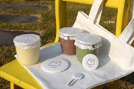
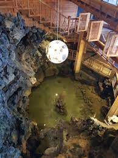
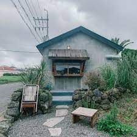
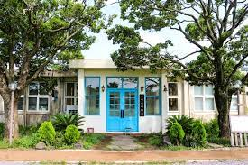

제주도 3박 4일 여행
- 1일차
- 2일차
- 3일차
2일차
한림으로 이동!
간단하게 숙소 주변에서 아침해결
한림으로 이동해서 아.점-> 한림칼국수
우무로 이동(도보 20분 소요)

우무->협재 해수욕장으로 (버스로 8분 소요) or 이익새양과점 -> 도보로 18분 (한림칼국수에서)
근데 우무갔다가 협재가 나을듯!
협재 해수욕장에서 놀다가 카페 및 저녁 해결하고 숙소!
카페-> 월령(얘는 좀 먼듯?), 이면, 명월국민학교



순서대로 카페 사진임
식당->제갈양(갈치정식-좀 비싸), 협재섬바다(갈치정식-가성비 굿), 강식당(고기국수), 쪼꼴락상회(라면집),